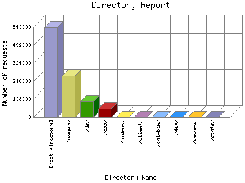

Analog 5.24
Analog 5.24 Report Magic for Analog 2.13
Report Magic for Analog 2.13The Directory Report analyzes accesses to this web site's directories. This information can be useful in determining the most requested areas.
This report shows all results. This report is sorted by number of requests.

| Directory Name | Number of requests | Percentage of bytes transferred in the last 7 days | |
|---|---|---|---|
| 1. | [root directory] | 536,529 | 38.32% |
| 2. | /images/ | 247,227 | 61.44% |
| 3. | /js/ | 95,121 | 0.13% |
| 4. | /css/ | 50,017 | 0.10% |
| 5. | /videos/ | 865 | 0% |
| 6. | /client/ | 541 | 0% |
| 7. | /cgi-bin/ | 1 | 0% |
| 8. | /dev/ | 172 | 0% |
| /dev/css/ | 23 | 0% | |
| /dev/js/ | 44 | 0% | |
| /dev/images/ | 59 | 0% | |
| 9. | /secure/ | 1 | 0% |
| 10. | /stats/ | 60 | 0% |
This report was generated on March 28, 2021 06:13.
Report time frame December 19, 2013 00:28 to October 14, 2020 09:11.
| Web statistics report produced by: | |
| Analog 5.24 | Report Magic for Analog 2.13 |